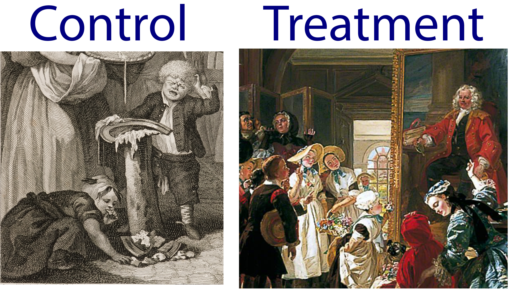
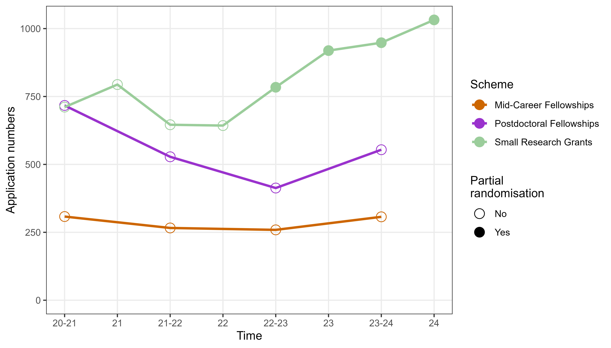
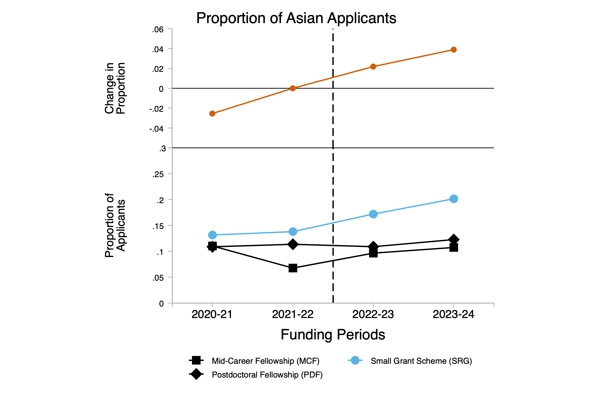
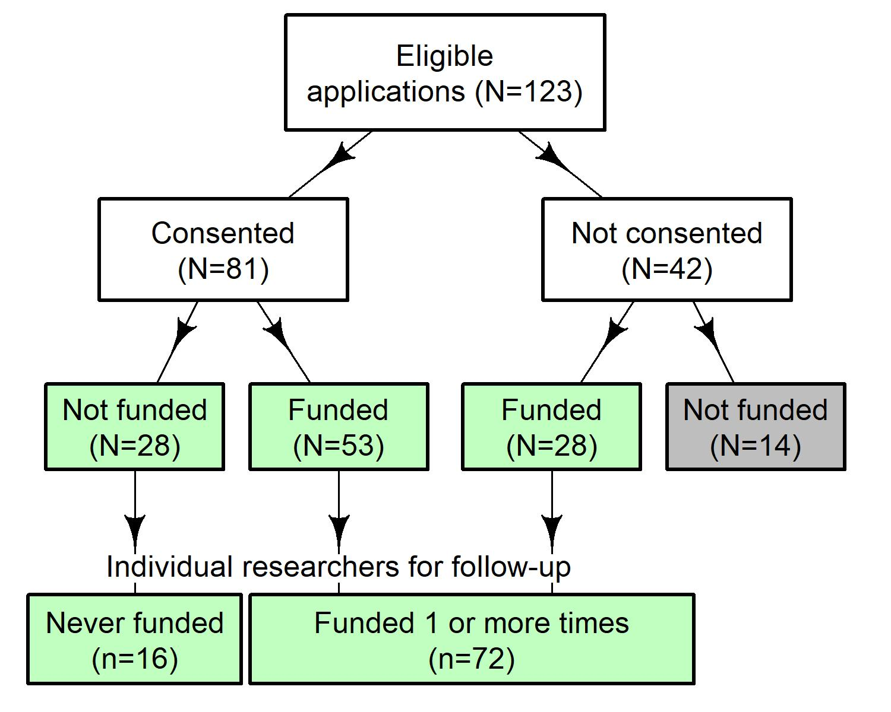
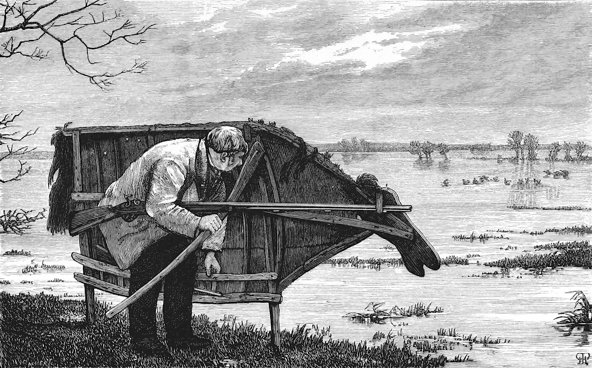
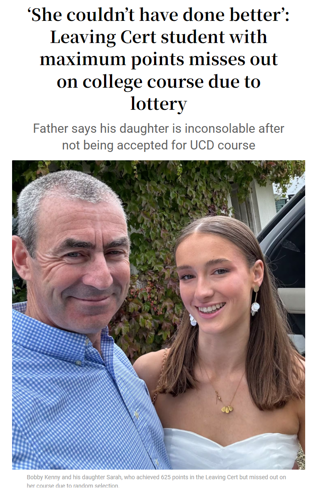
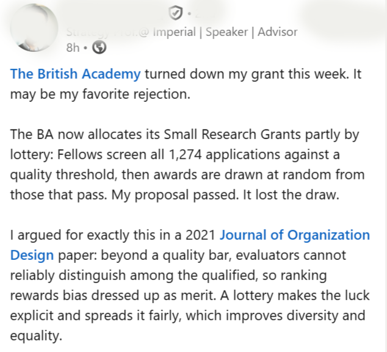

Lotteries for policy administration and evaluation
14 September 2026
Queensland University of Technology
Photo by Brett Jordan on Unsplash
Outline
Little bit of history
Lotteries in:
- Research funding
- Health and medicine
Foundling hospital in London
Outcomes for foundlings

Why can lotteries inform policy
Confounding is everywhere
Lotteries remove it all
Statistical bleach
Photo by Clay Banks on Unsplash
Observational disaster
Glucagon-like peptide-1 receptor agonists (GLP-1 RAs) for obesity (e.g., Ozempic)
Observational studies showing that women with breast cancer who take GLP-1 RA’s live longer
Observational disaster
- But women who took these drugs had to live longer (on average) – immortal time bias
Funders
Photo by Mathieu Stern on Unsplash
Funders that have used lotteries
Health Research Council of New Zealand
VolkswagenStiftung
Austrian Science Fund
Swiss National Science Foundation
Novo Nordisk Fonden
British Academy
UKRI / NERC
Wellcome
Nesta
University of Leeds
UMC Utrecht/Ministry of OCW
Carnegie Trust
Statistical Society of Australia
Association for Interdisciplinary Meta-Research and Open Science
International Society for Clinical Biostatistics
NZ Ministry of Business, Innovation & Employment
Dana Foundation
Carnegie Trust
Academy of Social Sciences in Australia
Lotteries at The British Academy
Rhys Llewellyn Thomas (Oxford), Philip Clarke (Oxford)
Ken Emond (British Academy)
BA/Leverhulme Small Research Grants
- Total budget around £1.3 million per round
- Awards £10k for up to 24 months
- Often for pilot studies and small-scale projects
BA/Leverhulme Small Research Grants
- Total budget around £1.3 million per round
- Awards £10k for up to 24 months
- Often for pilot studies and small-scale projects
- High priority in the British Academy’s portfolio – running for over 50 years
- Wide outreach: around 100 institutes represented
- 600 applications per round with around 300 suitable for funding with around 150 awarded
Why switch to a lottery?
- People “self-disqualifying” under the old system as they were not confident of winning funding and perceived a bias if they were not from an “elite” institution
Why switch to a lottery?
People “self-disqualifying” under the old system as they were not confident of winning funding and perceived a bias if they were not from an “elite” institution
Spending time picking apart candidates separated by wafer-thin differences - concerns about efficiency
Small grants are for innovative and/or first opportunities
More applications

Average of 516 more applicants per round
Greater diversity

Asian and Asian British applicants increased by 4%
British Academy summary
“Very encouraging” outcomes; decided to extend the trial for three more years
Little negative feedback from applicants and reviewers
“Playing our part towards a fairer and more inclusive research culture”
Lottery for New Zealand Health Research Council
Photo by Sulthan Auliya on Unsplash
Design
Started in 2013
Researchers with transformative, innovative, exploratory, or unconventional research ideas
Awarded NZD $150,000 for up to 2 years
Design
Started in 2013
Researchers with transformative, innovative, exploratory, or unconventional research ideas
Awarded NZD $150,000 for up to 2 years
Two criteria:
- the research is potentially transformative
- the proposal is exploratory but viable
Short-listed applications are funded at random until the budget is exhausted
Survey of applicants
- Randomisation accepted for Explorer Grant with 63% (n = 79) in favour and 25% (n = 32) against
Survey of applicants
Randomisation accepted for Explorer Grant with 63% (n = 79) in favour and 25% (n = 32) against
Randomisation supported after ineligible applications had been excluded and outstanding applications funded, so that the remaining applications were equal
Greater support for randomisation amongst those that won funding at random!
Trial participants

Trial results
World’s first trial of funding
88 researchers who were followed for an average of 3.8 years
Trial results
World’s first trial of funding
88 researchers who were followed for an average of 3.8 years
No differences between funded and not funded for:
- Publication counts
- Citations
- Altmetric
Lottery first
Lottery for right to apply
Greatly reduces application costs
Used by funders in Germany and Denmark

Doctor lotteries
Randomised doctors


Randomised trial of doctors
Compared those who were accepted on their first application to all others in Sweden
Follow-up of families from medical school enrollment to eight years later
Randomised trial of doctors
Compared those who were accepted on their first application to all others in Sweden
Follow-up of families from medical school enrollment to eight years later
45% decrease in heart attacks
27% increase in blood thinner medications
22% increase in HPV vaccination
Reverse direction
- For prospective randomised trials, we should know the mechanism in order to get ethical approval
Reverse direction
For prospective randomised trials, we should know the mechanism in order to get ethical approval
Can assume the doctor effect is causal, but what is the mechanism?
Reverse direction
For prospective randomised trials, we should know the mechanism in order to get ethical approval
Can assume the doctor effect is causal, but what is the mechanism?
Easy access to qualified advice saves lives
Potentially larger benefits in lower SES families
In Australia
Places at Australian medical schools are greatly over-subscribed, with 3 to 4 applicants for every place
Most applicants have excellent grades and CVs with impressive extra-curricular activities
Few will have yet faced the difficult situations that they will often encounter as a doctor
Bad publicity

Good publicity

Where are we?
Lotteries increase fairness
They are acceptable to many applicants where it’s amongst equally qualified
Where are we?
Lotteries increase fairness
They are acceptable to many applicants where it’s amongst equally qualified
Ideal design to create causal estimates to inform policy
Still a hard sell for some